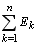

Закон Ома устанавливает зависимость между током и напряжением на пассивной ветви (рис. 2.35, а) при совпадении положительных направления тока и напряжения на ней, т. е.
Для ветви с источником напряжения (рис. 2.35, б) используют обобщенный закон Ома:
Знак плюс перед ЭДС E и напряжением U12 записывают при совпадении их положительных направлений и условно положительного направления тока I и знак минус при не совпадении их направлений с направлением тока. Для ветви с n источниками напряжения и m резисторами (рис. 2.35, в ) ток:
| где |
 |
= - Е1 + Е2 - алгебраическая сумма ЭДС в ветви. |
Для обобщенной ветви (рис. 2.35, г) с источником напряжения Е и источником тока J ток
Знак плюс перед током J записывают при совпадении его положительного направления и условно положительного направления тока I и минус при их противоположном направлении.
|
|